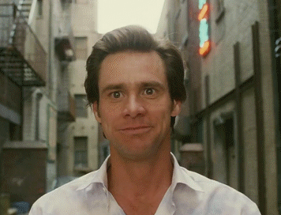
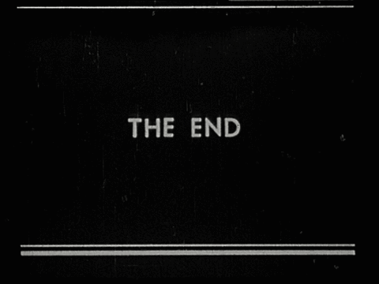
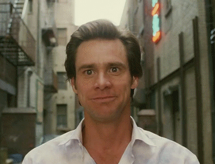
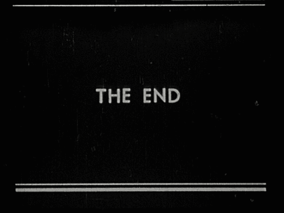
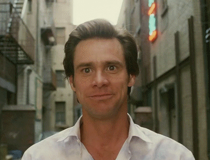
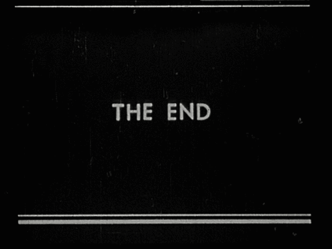

Carpenter shows online existence to readers to reconsider the artfully created and deeply human web through personal stories and poetic prose. I find website design to be the most creative thing that I have done and to learn how to code in this class is a new artform I am learning.
My Website is a Shifting House
A website is what you make it as long as it appeals to the user as well, your website is your artwork. Schwulst emphasizes that the web progresses with us as time goes. You can have anxiety about what you are creating but in the end it will grow as you grow, as society grows. Everything is constantly changing.
A Rant on Technology
Technology is much more than most people think. For me, when I hear the word technology in today's age I of course, like most others, think of computers. However, Le Guin has reminded me that technology is every material thing that we interact with. How fascinating? Now everything seems like art to me.
These gifs describe how it feels to make websites/code.


My Reflection
What is a website anyway?
A website is a place where people can express who they are as a person, as a company, as an artist, and the list goes on. A website obviously has its technical terms but to me in this sense it is just like a physical canvas. From our readings I have found to be less stressed out about the way that my work looks because it will progress as my knowledge progresses. It is my work and my art that I am creating.
Why put things on the internet?
Just like Carpenter mentioned, putting things out on the internet lets us connect with much more people in a different and more personal way. By creating a handmade website you are putting out something that is personal to you. I think it is important to put out artwork everywhere. Even if you are a physical artist, the internet is a great way to show more and more people your take on website design as well as your physical art portrayed online.
Will websites someday become obsolete?
I think at a certain time everything can become obsolete but be revamped. Sometimes being out of date is in style. Even if websites do become obsolete in a sense, they will always come back.
What is your relationship with technology?
My relationship with technology is interesting. I love to design. Using Figma is one of the most fun yet challenging things I can do. I learn a lot but can understand the material. Coming into this class and my other creative coding class, I have had a different relationship. I realized how much harder this is to create a handmade website. However, this difficult challenge is allowing me to grow as a person and to grow my knowledge.
 


